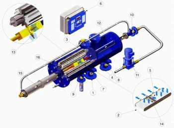

Filtre autocuratitoare automate MT33P
Filtre autocuratitoare automate MT33P asigura filtrare pana la 3 μm.

Caracteristici:
- 1 destinate filtrarii finale a apelor potabile, apei din piscine, a apelor reziduale. Recomandat pentru prefiltrare înaintea instalatiilor de osmoza inversa;
- 2 filtrare pana la 3 μm prin intermediul materalului filtrant textil;
- 3 functionare automata in regim de autocuratire;
- 4 constructie compacta;
- 5 cheltuieli reduse de exploatare;
- 6 nu necesita material filtrant ajutator;
- 7 brevetate pe plan mondial;
Functionarea filtrelor autocuratitoare model MT33P:
Apa introdusa in filtru prin racordul de alimentare (1) se filtreaza trecand prin casetele de filtrare (2) si prin tevile colectoare ale acestora (3) si este evacuata din filtru prin racordul de iesire (4). Pe parcursul filtrarii impuritatile se aduna pe materialul filtrant textil (5). Acest lucru creaza o diferenta de presiune intre presiunile apei in amonte si aval de materialul filtrant.
La atingerea unei diferente de presiune presetate sau la intervale de timp presetate panoul de comanda (6) porneste mecanismul de autocuratire. Ventilele de intrare si de iesire (7,8) se inchid, ventilele de purjare si spalare inversa (9,10) se deschid. Pompa de spalare (11) furnizeaza apa de inalta presiune prin conducta de ghidare (12) catre duzele de spalare (13).
Jeturile de apa sub presiune iesite din duze patrund prin materialul filtrant textil, se lovesc de suportul de material plastic (14) al casetelor de filtrare fiind ricosate inapoi spre materialul filtrant textil. Jeturile de apa ricosate antreneaza impuritatile acumulate pe casetele de filtrare si le elimina din filtru prin ventilul de purjare. Cilindrul hidraulic (15) realizeaza deplasarea duzelor de spalare.
La capatul cursei, un mecanism special de indexare realizeaza rotirea casetelor de filtrare. Cand casetele au efectuat o rotatie completa, filtrul este curatat. Ventilele de purjare si spalare inversa se închid, pompa de spalare se opreste, ventilele de intrare si iesire din filtru se deschid si filtrul intra din nou in procesul de filtrare.
h4>Caracteristici tehnice principale:- 1 racord intrare / iesire: 3";
- 2 capacitate de filtrare maxima: 40 m3/h;
- 3 presiune de lucru: min. 0,2 bar / max. 10 bar;
- 4 temperatura de lucru max.: 40ºC;
- 5 finete de filtrare: pana la 3 microni;
- 6 durata spalarii: aprox. 25-50 secunde;
- 7 cantitate apa de spalare: 70 - 120 l/ spalare;
- 8 debitul apei de spalare: 12 m3/h la 8 bar;
- 9 comanda spalarii: diferenta de presiune p, electropneumatic sau electrohidraulic;
- 10 lungimea totala: 2460 mm;
- 11 inaltime totala: 440 mm.